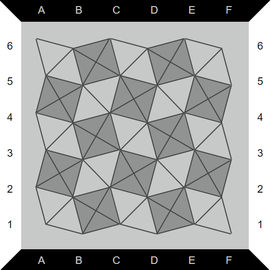
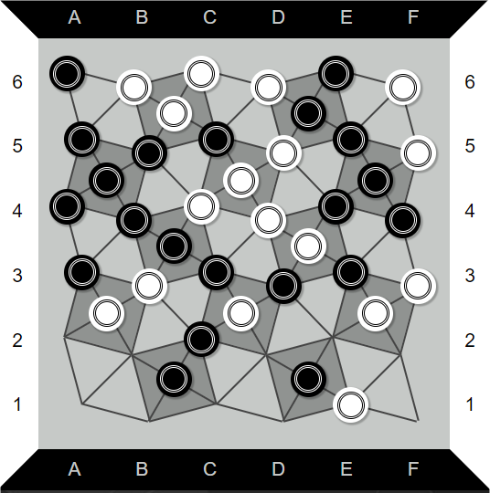
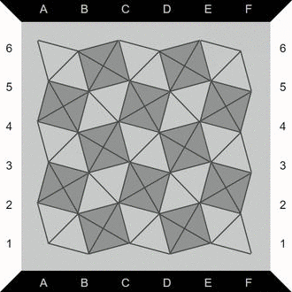
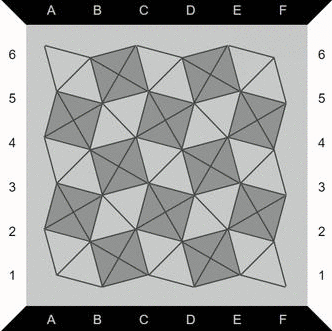

Deux joueurs s'affrontent. Chacun d'eux possède des pions de couleurs différentes (noir ou blanc). Tour à tour les joueurs vont disposer des pions sur le plateau.
Le plateau est composé de carrés et de losanges coupés en leur milieu. On peut poser les pions sur les intersections.


Le but du jeu est de réussir à réaliser une ligne ininterrompue de pions entre deux côtés du plateau. Le joueur blanc doit donc faire une ligne horizontale, tandis que le joueur noir doit faire une ligne verticale.
Attention, on ne peut pas poser de pion au centre d’un carré si l’un de ses coins est déjà occupé par un autre pion !


Si le centre d’un carré est inoccupé et qu’un joueur place un pion sur le dernier coin libre du carré alors qu'il a déjà disposé un pion sur le côté opposé, alors les deux pions adverses sont capturés (retirés du jeu).
Il est possible donc possible de capturer jusqu'à 4 pions d’un coup !